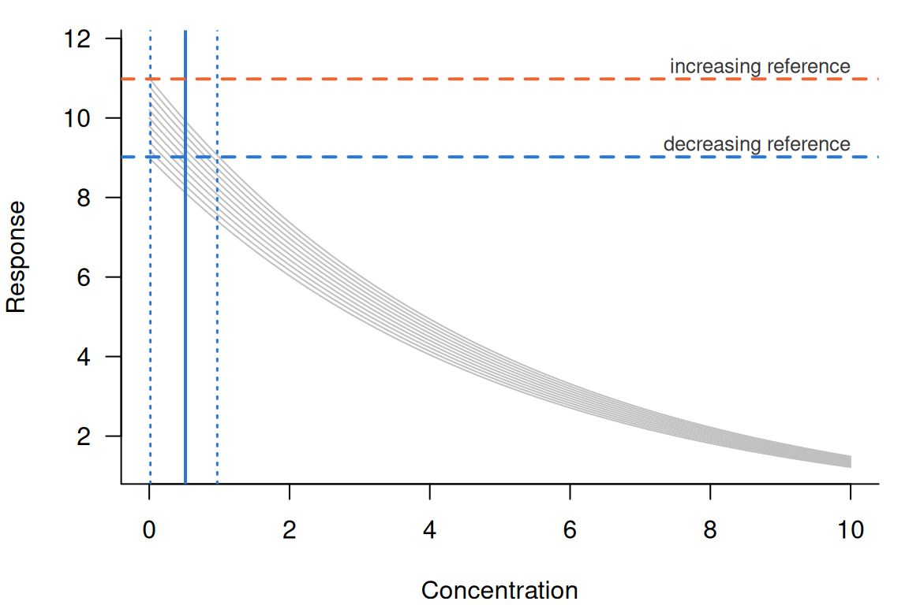
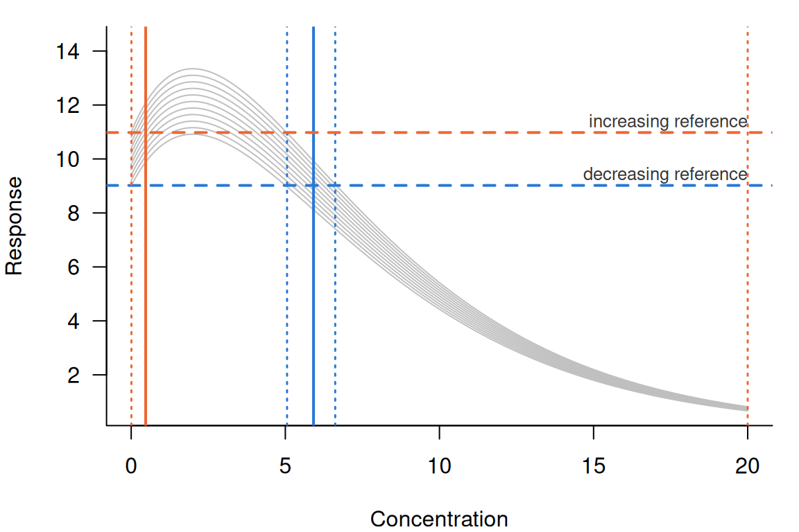
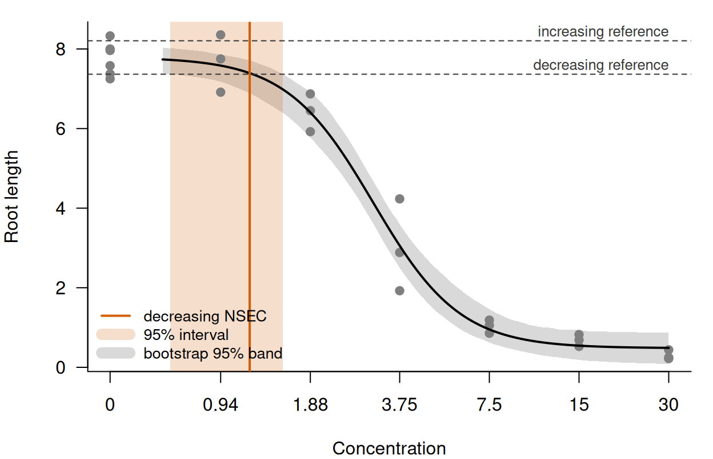

library(toxval)
has_drc <- requireNamespace("drc", quietly = TRUE)
# the columns read in the text; each result also has `metric`, `sig_val`,
# `type`, `anchor` and `asymptote`
show_nsec <- function(x) {
x[, c(
"direction", "estimate", "conf.low", "conf.high",
"control", "reference", "ecnsec", "ecnsec.low", "ecnsec.high"
)]
}Background
A no-effect concentration (NEC) is suited only to a curve with a threshold, below which the response does not change. For a curve without one, Fisher and Fox (2023) described the no-significant-effect concentration (NSEC), the lowest concentration at which the fitted response differs from the control response by more than the uncertainty in the control allows. nsec() computes it from realisations of the fitted curve (a posterior draw of a Bayesian fit, or a parametric bootstrap replicate of a frequentist fit), each evaluated over a grid of concentrations. toxval_predict() builds that grid and those realisations, and stores them in a toxval_pred object.
For each curve, nsec() does three things.
- It sets one reference response for each direction. The decreasing reference is the
sig_valquantile of the control realisations (sig_valis 0.01 by default), and the increasing reference is the1 - sig_valquantile. A control realisation is the predicted response of a realisation at the control concentration (by default the lowest concentration in the data, where the grid starts). - For each realisation, it finds the first concentration at which that realisation crosses the reference in each direction, using linear interpolation between grid points.
- It summarises the crossings by the quantiles in
prob_vals(by default the median and the 2.5 and 97.5 per cent quantiles).
Both directions are sought on each call and returned as one row per direction, identified by the direction column, and a direction in which no realisation crosses is returned with NA estimates.
The reference is a quantile of the control realisations, so it is defined only across realisations, and all realisations of a curve are measured against the same reference (under anchor = "component", all realisations of one component; see The anchor argument). The ECx reference, by contrast, is computed for each realisation from its own control (see vignette("ecx-definition", package = "toxval")).
The examples below use sets of 101 realisations constructed with new_toxval_pred() (not sampled from a fit), with evenly spaced controls, so that each value returned by nsec() can be computed independently. The helper build_pred() evaluates one curve shape at each control. It sets the control concentration (x_control) to 0, the first grid value, and family = "beta" marks a response on the proportion scale (see ?new_toxval_pred for the slots it fills).
The helper build_pred()
build_pred <- function(shape, controls, x_vec, family = "gaussian", ...) {
curves <- t(vapply(
controls,
function(control) shape(control, x_vec),
numeric(length(x_vec))
))
new_toxval_pred(
curves = list(curves),
keys = data.frame(row.names = 1L),
x_vec = x_vec,
meta = list(
source_class = "constructed",
x_var = "x",
group_var = NULL,
multi_var = NULL,
resolution = length(x_vec),
x_range = range(x_vec),
x_control = 0,
family = family,
realisation = "draws",
n_realisation = length(controls),
seed = NULL,
...
)
)
}A decreasing response
A response that falls with concentration (e.g. growth) is the case for which the NSEC was described (Fisher and Fox 2023). In a constructed set its NSEC can be found by hand, so each of the three steps above can be checked.
The first set has controls from 9.00 to 11.00 in steps of 0.02, and each realisation declines exponentially from its control () over a grid of 500 concentrations from 0 to 10.
controls <- seq(9, 11, by = 0.02)
decline <- function(control, x) control * exp(-x / 5)
dec_pred <- build_pred(decline, controls, seq(0, 10, length.out = 500))
dec <- nsec(dec_pred)
print(dec, width = Inf)
#> # A tibble: 2 × 14
#> # Model: constructed
#> # Settings: resolution 500 | 101 posterior draws
#> metric direction estimate conf.low conf.high sig_val type anchor control reference asymptote
#> <chr> <chr> <dbl> <dbl> <dbl> <dbl> <chr> <chr> <dbl> <dbl> <dbl>
#> 1 nsec decreasing 0.516 0.0166 0.969 0.01 absolute model 10 9.02 NA
#> 2 nsec increasing NA NA NA 0.01 absolute model 10 11.0 NA
#> ecnsec ecnsec.low ecnsec.high
#> <dbl> <dbl> <dbl>
#> 1 0.098 0.00331 0.176
#> 2 0.098 0.00274 0.213nsec() computes the references, and summarises the crossings, with R’s default quantile method (type 7), under which the quantile at probability of 101 values is the value at position in sorted order, interpolated where that position is not a whole number. A row with a censored realisation is the exception, and is summarised as described under Realisations with no crossing. The decreasing reference is therefore 9.02 (the 0.01 quantile, the second-smallest control), and the increasing reference is 10.98 (the 0.99 quantile, the hundredth). A realisation with control crosses the decreasing reference at , so the median realisation, with a control of 10.00, has an NSEC of , and nsec() returns 0.516. The interval of 0.0166 to 0.969 agrees to within one grid step (0.0200) with the 2.5 and 97.5 per cent quantiles of the 101 crossings given by this formula, taking 0 for the realisation with control 9.00 (which starts below the decreasing reference, and is placed by the rule given under Realisations with no crossing). The increasing row has NA estimates because no realisation rises, although its reference and ecnsec still describe the response level that was sought.

The realisations differ only in their control (Figure 1), so the spread of the NSEC comes entirely from the spread of the control. The lowest curve shown (control 9.00) starts below the decreasing reference, whereas the highest (control 11.00) starts above the increasing reference, and no curve rises towards it.
The effect at the NSEC
An NSEC is a concentration, so it does not by itself give the size of the effect that it detects. ecnsec gives that size, so that an NSEC can be compared with an ECx. It is the effect that the NSEC reference represents, expressed as a proportion of the span named by type. It is the inverse of the ECx reference under that type: an ECx at proportion sets its reference of the span away from the control, and ecnsec gives the at which that reference would equal the NSEC reference. Under the default, type = "absolute", both spans of a response that is not a proportion are the control, so for a realisation with control , decreasing reference and increasing reference
ecnsec is computed for each realisation and summarised by the quantiles used for the NSEC. For the decreasing set the median decreasing ecnsec is (i.e. the decreasing reference is 9.8 per cent below the median control), and the median increasing ecnsec is (the increasing reference is 9.8 per cent above it). For a proportion the increasing span is instead the distance from the control to 1, as described under An increasing response, and the span for each type and direction is given in vignette("ecx-definition", package = "toxval").
We can test the inverse relation by calling ecx() at the median ecnsec.
ecx(dec_pred, proportion = dec$ecnsec[1])
#> # A tibble: 2 × 10
#> # Model: constructed
#> # Settings: resolution 500 | 101 posterior draws
#> metric direction estimate conf.low conf.high proportion type control reference asymptote
#> <chr> <chr> <dbl> <dbl> <dbl> <dbl> <chr> <dbl> <dbl> <dbl>
#> 1 ecx decreasing 0.516 0.516 0.516 0.098 absolute 10 9.02 NA
#> 2 ecx increasing NA NA NA 0.098 absolute 10 11.0 NAThe decreasing ECx at proportion 0.0980 is 0.516, the NSEC of the median realisation. Its interval has zero width because each realisation here is its control multiplied by , so each falls by a given proportion of its own control at the same concentration, .
type changes ecnsec, but not the NSEC. For example, under type = "range" the decreasing span is the control minus the lowest response of the realisation over the grid (here ).
dec_range <- nsec(dec_pred, type = "range")
show_nsec(dec_range)
#> # A tibble: 2 × 9
#> # Model: constructed
#> # Settings: resolution 500 | 101 posterior draws
#> direction estimate conf.low conf.high control reference ecnsec ecnsec.low ecnsec.high
#> <chr> <dbl> <dbl> <dbl> <dbl> <dbl> <dbl> <dbl> <dbl>
#> 1 decreasing 0.516 0.0166 0.969 10 9.02 0.113 0.00383 0.204
#> 2 increasing NA NA NA 10 11.0 NA NA NAThe NSEC and its interval are identical to those under "absolute", whereas the median decreasing ecnsec is 0.113 (). The increasing ecnsec is NA because a declining curve has no response above its control, so its increasing span under "range" is zero. type = "relative" measures to the asymptote of the fitted equation, which a constructed toxval_pred supplies only through its asymptote slot.
nsec() refuses type = "direct".
nsec(dec_pred, type = "direct")
#> Error in `nsec()`:
#> ! `type` must not be 'direct' for an NSEC; the response value at the NSEC is reported as `reference`.Under "direct" the ECx reference is a response value supplied by the user, with no span, so the ecnsec would be the NSEC reference itself (a single value for all realisations), which is already given in the reference column. However, ecx() keeps type = "direct", under which the supplied value sets the reference and the ECx varies between realisations.
An increasing response
The NSEC of a rising response is found as for a falling one, from the increasing reference (the 1 - sig_val quantile of the controls). The example uses a proportion, for which ecnsec is measured against the distance from the control to 1.
The second set is a proportion (e.g. mortality) that rises from its control towards 1, , with controls from 0.050 to 0.150 in steps of 0.001 over the grid of the decreasing set. family = "beta" records that the response is a proportion.
inc_controls <- seq(0.05, 0.15, by = 0.001)
rise <- function(control, x) 1 - (1 - control) * exp(-x / 5)
inc_pred <- build_pred(
rise,
inc_controls,
seq(0, 10, length.out = 500),
family = "beta"
)
inc <- nsec(inc_pred)
show_nsec(inc)
#> # A tibble: 2 × 9
#> # Model: constructed
#> # Settings: resolution 500 | 101 posterior draws
#> direction estimate conf.low conf.high control reference ecnsec ecnsec.low ecnsec.high
#> <chr> <dbl> <dbl> <dbl> <dbl> <dbl> <dbl> <dbl> <dbl>
#> 1 decreasing NA NA NA 0.1 0.0510 0.490 0.0285 0.654
#> 2 increasing 0.280 0.00881 0.537 0.1 0.149 0.0544 0.00176 0.102The increasing reference is the 0.99 quantile of the controls (0.149, the hundredth value). A realisation with control crosses it at , which for the median control of 0.100 is 0.280, and nsec() returns 0.280 (0.00881 to 0.537), in agreement with the formula to within one grid step. The decreasing row is NA, since no realisation falls.
For a proportion, however, the increasing span under "absolute" is (the distance from the control to the upper bound of the response), so
which is the extra risk at the NSEC. Its median is .
A hormetic response
A hormetic response rises above its control at low concentrations and then falls, so a realisation can cross the increasing reference and then the decreasing one. nsec() returns an NSEC for each direction, and the example shows how each is read.
The third set uses the controls of the decreasing set with a hormetic shape, , over a grid of 500 concentrations from 0 to 20. Each realisation rises to times its control at and then declines. Because the controls are unchanged, the references are those of the decreasing set.
hormesis <- function(control, x) control * (1 + x / 2) * exp(-x / 4)
horm_pred <- build_pred(hormesis, controls, seq(0, 20, length.out = 500))
horm <- nsec(horm_pred)
#> Warning: Some realisations have no crossing within the evaluated range, so a reported quantile is at the highest concentration, or have no reference and were excluded. Consider a wider `x_range`.
#> * increasing: 3.0% censored
show_nsec(horm)
#> # A tibble: 2 × 9
#> # Model: constructed
#> # Settings: resolution 500 | 101 posterior draws
#> direction estimate conf.low conf.high control reference ecnsec ecnsec.low ecnsec.high
#> <chr> <dbl> <dbl> <dbl> <dbl> <dbl> <dbl> <dbl> <dbl>
#> 1 decreasing 5.92 5.06 6.62 10 9.02 0.098 0.00331 0.176
#> 2 increasing 0.470 0.00741 20 10 11.0 0.098 0.00274 0.213Both rows have estimates. The decreasing NSEC is 5.92 (5.06 to 6.62), where the declining part of each curve falls through 9.02, and the increasing NSEC is 0.470 (0.00741 to 20.0), where the rising part passes 10.98. Both agree to within one grid step (0.0401) with crossings found by uniroot(). The increasing row has censored realisations, which never reach the reference and are ranked above every crossing (see Realisations with no crossing), so its crossings are compared as order statistics. The ecnsec values are those of the decreasing set, because under absolute the effect at the NSEC depends only on the controls and the references, which are unchanged.

Most curves cross twice (Figure 2), with an increasing crossing before the peak at and a decreasing crossing after it. The result also has two features that are absent from the monotone sets.
First, the realisation with control 9.00 starts below the decreasing reference, but it rises above the reference and then falls through it at 5.01. Because this is a crossing in the direction sought, nsec() gives it that concentration, although its response first rises away from the effect.
Second, the 3 realisations with the lowest controls peak below the increasing reference (the highest of them peaks at , against 10.98). They never cross upward, so they are censored. Because they are 3.0 per cent of the realisations, the upper limit of the increasing NSEC is reported as the highest concentration (20.0), and the call warns. The warning suggests a wider x_range. However, a wider range would not resolve the censoring, because these realisations decline beyond . The upper limit would instead be reported at the new highest concentration. It indicates that more than 2.5 per cent of the realisations show no increase past the reference anywhere in the tested range.
Realisations with no crossing
Some realisations do not cross the reference within the grid, because their control is already past it or because their response changes too little over the concentrations evaluated. How such realisations are treated changes the interval, and sometimes the estimate. A realisation that never crosses the reference in the direction sought, within the grid, has no NSEC of its own, and nsec() treats it in one of four ways.
- A realisation whose control is already at or beyond the reference, in the direction sought, is given
x_control(the control concentration, by default the lowest concentration in the data the model was fitted to). - The exception is such a realisation that shows no effect in the tested range, and it is censored (see the next point). Its response first changes away from the effect as concentration rises from the control (i.e. it rises, for a decreasing NSEC, or falls, for an increasing one). It then passes to the no-effect side of the reference (above it for a decreasing NSEC and below it for an increasing one), and does not return. Changes smaller than
1e-8times the largest absolute response of the realisation are ignored in finding the first change, so a curve that is flat at the control is judged by the direction of its first larger change. - A realisation that does not reach the reference within the grid is given
Inf, which ranks it above all crossings. A quantile that falls among such realisations is reported as the highest concentration, and the call warns with the fraction of realisations that are censored. - A realisation with no finite control (e.g. a bootstrap replicate outside the parameter space of the model) is excluded from the summary and counted in the warning.
Censoring follows from what a missing crossing means. A realisation that has not reached the reference by the highest concentration would reach it, if at all, at a higher one, so it belongs in the upper tail. Dropping it would give a quantile of only the realisations that crossed, which is lower than that quantile of all of them. A realisation that starts past the reference and then passes to the no-effect side is past it only because its own control is in the tail of the control realisations. Within the tested range it never departs from the control towards the effect, so it is censored in the same way.
Because a censored realisation has a rank but no value, a row that contains one is summarised by observed order statistics (quantile() type 1) rather than by type 7. Type 7 interpolates between adjacent sorted values, and an interpolation between the last crossing and a censored realisation has no finite value, so under type 7 a quantile only partly among the censored realisations would be reported as the highest concentration. Under type 1, the quantile at probability of values is the value at position in sorted order. Types 1 and 7 agree where the type 7 position, , is a whole number (e.g. for the median of 101 values). Elsewhere the switch changes the quantile, including one well below the censored realisations, by at most the gap between the adjacent sorted values that type 7 interpolates between.
Controls past the reference
By construction of the reference, about a fraction sig_val of the realisations have a control at or beyond it. For example, the decreasing set has one, whose control of 9.00 is below the reference of 9.02. Its response falls (towards the effect), so it is placed at x_control. With sig_val = 0.05, more than 2.5 per cent of the realisations are placed there, so they set the lower limit of the interval.
dec_05 <- nsec(dec_pred, sig_val = 0.05)
show_nsec(dec_05)
#> # A tibble: 2 × 9
#> # Model: constructed
#> # Settings: resolution 500 | 101 posterior draws
#> direction estimate conf.low conf.high control reference ecnsec ecnsec.low ecnsec.high
#> <chr> <dbl> <dbl> <dbl> <dbl> <dbl> <dbl> <dbl> <dbl>
#> 1 decreasing 0.472 0 0.925 10 9.1 0.0900 -0.00553 0.169
#> 2 increasing NA NA NA 10 10.9 0.0900 -0.00457 0.204The decreasing reference is now 9.10 (the sixth control), and the 5 realisations with lower controls are below it from the start. They decline, as do all realisations of this set, so they are placed at x_control, and the lower limit is 0. Fisher and Fox (2023, p. 2026) describe the same result: where the significance level is higher than the lower probability of the interval (typically 0.025), the lower limit of the NSEC is zero (e.g. at levels of 0.05, 0.10 and 0.20 in their Table 3). Where they give zero, nsec() gives x_control, which is 0 for these realisations.
Those realisations would instead be censored if they showed no effect. To show this, the next set keeps the controls and the declining curves of the decreasing set, except that the 5 realisations with controls below 9.10 rise slowly ().
rise_slowly <- function(control, x) control * exp(x / 100)
mixed_shape <- function(control, x) {
if (control < controls[6]) rise_slowly(control, x) else decline(control, x)
}
mixed_pred <- build_pred(mixed_shape, controls, seq(0, 10, length.out = 500))
mixed <- nsec(mixed_pred, sig_val = 0.05, draws = TRUE)
#> Warning: Some realisations have no crossing within the evaluated range, so a reported quantile is at the highest concentration, or have no reference and were excluded. Consider a wider `x_range`.
#> * decreasing: 5.0% censored
show_nsec(mixed)
#> # A tibble: 2 × 9
#> # Model: constructed
#> # Settings: resolution 500 | 101 posterior draws
#> direction estimate conf.low conf.high control reference ecnsec ecnsec.low ecnsec.high
#> <chr> <dbl> <dbl> <dbl> <dbl> <dbl> <dbl> <dbl> <dbl>
#> 1 decreasing 0.521 0.0219 10 10 9.1 0.0900 -0.00553 0.169
#> 2 increasing NA NA NA 10 10.9 0.0900 -0.00457 0.204
head(mixed$draws[[1]], 7)
#> # A tibble: 7 × 3
#> .draw value.draw ecnsec.draw
#> <int> <dbl> <dbl>
#> 1 1 Inf -0.0111
#> 2 2 Inf -0.00887
#> 3 3 Inf -0.00664
#> 4 4 Inf -0.00442
#> 5 5 Inf -0.00220
#> 6 6 0 0
#> 7 7 0.0110 0.00219The reference is still 9.10, since the controls are unchanged. Each of the 5 rising realisations passes above it by and stays above it to the end of the grid. Because its response first changes away from a decreasing effect and then remains on the no-effect side, it shows no effect in the tested range, so nsec() censors it (Inf in the draws column). Ranked above all crossings, the censored realisations raise the lower limit from 0 to 0.0219 and the median from 0.472 to 0.521. They are 5.0 per cent of the realisations, so the 97.5 per cent quantile falls among them and is reported as the highest concentration (10.0), and the call warns. A wider range would not remove the censoring, since the response of these realisations rises further above the reference as concentration increases. Each value agrees to within one grid step with the order statistics of the crossings of the declining realisations, with the rising ones ranked above them.
Crossings beyond the grid
A realisation that has not reached the reference by the highest concentration is censored, so the upper limit of the interval can be no higher than the end of the grid. The decreasing set was also evaluated over a shorter grid, from 0 to 0.9, in which the realisations with the highest controls decline too little to reach the reference, so they are censored. For a fitted model the range is set with x_range, whereas for a constructed toxval_pred it is the grid supplied, and nsec() refuses x_range.
short_pred <- build_pred(decline, controls, seq(0, 0.9, length.out = 500))
short <- nsec(short_pred, draws = TRUE)
#> Warning: Some realisations have no crossing within the evaluated range, so a reported quantile is at the highest concentration, or have no reference and were excluded. Consider a wider `x_range`.
#> * decreasing: 10.9% censored
show_nsec(short)
#> # A tibble: 2 × 9
#> # Model: constructed
#> # Settings: resolution 500 | 101 posterior draws
#> direction estimate conf.low conf.high control reference ecnsec ecnsec.low ecnsec.high
#> <chr> <dbl> <dbl> <dbl> <dbl> <dbl> <dbl> <dbl> <dbl>
#> 1 decreasing 0.516 0.0111 0.9 10 9.02 0.098 0.00331 0.176
#> 2 increasing NA NA NA 10 11.0 0.098 0.00274 0.213
tail(short$draws[[1]], 3)
#> # A tibble: 3 × 3
#> .draw value.draw ecnsec.draw
#> <int> <dbl> <dbl>
#> 1 99 Inf 0.177
#> 2 100 Inf 0.179
#> 3 101 Inf 0.1811 of the 101 realisations (those with controls from 10.80 to 11.00) would reach the reference beyond 0.900. They are Inf in the draws column and make up 10.9 per cent of the realisations. Because the 97.5 per cent quantile has 2.5 per cent of the realisations above it, it falls among the censored ones and is reported as 0.900 (the highest concentration), and the call warns. The median, 0.516, is that of the full grid. The lower limit is 0.0111, against 0.0166 on the full grid, although the realisations that set it crossed within both ranges. This is because the row now has censored realisations, so its lower limit is the third crossing, whereas the full grid takes the value halfway between the third and the fourth.
The upper limit should then be read as “at least 0.900”, since the tested range did not extend far enough to bound it. Where the censored realisations are fewer than 2.5 per cent, the upper limit is below all of them, and there is no warning.
few_pred <- build_pred(decline, controls, seq(0, 0.98, length.out = 500))
few <- nsec(few_pred, draws = TRUE)
show_nsec(few)
#> # A tibble: 2 × 9
#> # Model: constructed
#> # Settings: resolution 500 | 101 posterior draws
#> direction estimate conf.low conf.high control reference ecnsec ecnsec.low ecnsec.high
#> <chr> <dbl> <dbl> <dbl> <dbl> <dbl> <dbl> <dbl> <dbl>
#> 1 decreasing 0.516 0.0111 0.974 10 9.02 0.098 0.00331 0.176
#> 2 increasing NA NA NA 10 11.0 0.098 0.00274 0.213On a grid to 0.980, 2 realisations are censored. They are above the 97.5 per cent quantile, so the upper limit is a crossing (0.974, the 99th), and there is no warning. The full grid gives 0.969, halfway between the 98th and the 99th crossings, because that row has no censored realisation.
The anchor argument
anchor names where the reference comes from when the realisations come from a model average. A model average combines several fitted equations by weight (Fisher et al. 2024), and each of its realisations is drawn from one of those equations (its component). anchor is also returned as a column of the result.
anchor = "model" takes the reference from all the control realisations of the curve, pooled across components (as in the examples above), so that all realisations are measured against one response level, which can be drawn on a plot as in Figure 1.
anchor = "component" measures the realisations of each component against the sig_val quantile of that component’s own control realisations. This is the strict Bayesian model average, and the reference that bayesnec::nsec() uses for a model set. It is therefore the default for a bayesmanecfit, whereas "model" is the default otherwise. For a bayesmanecfit, each component’s quantile is taken over all draws of its own fit, not only the draws kept in the average. For a fit that is not a model average there is one component, so "model" and "component" give identical values.
dec_component <- nsec(dec_pred, anchor = "component")
dec_component[, c("direction", "estimate", "conf.low", "conf.high", "anchor")]
#> # A tibble: 2 × 5
#> # Model: constructed
#> # Settings: resolution 500 | 101 posterior draws
#> direction estimate conf.low conf.high anchor
#> <chr> <dbl> <dbl> <dbl> <chr>
#> 1 decreasing 0.516 0.0166 0.969 component
#> 2 increasing NA NA NA componentA model average is recognised from meta$draw_model, which names the component of each realisation. In the constructed set below, the realisations of the decreasing set with controls up to the median are assigned to an equation a, and the rest to an equation b.
draw_model <- ifelse(controls <= median(controls), "a", "b")
avg_pred <- build_pred(
decline,
controls,
seq(0, 10, length.out = 500),
model_weights = c(table(draw_model)) / length(draw_model),
draw_model = draw_model
)
avg_component <- nsec(avg_pred, anchor = "component")
avg_component[, c("direction", "estimate", "conf.low", "conf.high", "anchor")]
#> # A tibble: 2 × 5
#> # Model: constructed
#> # Settings: resolution 500 | 101 posterior draws
#> direction estimate conf.low conf.high anchor
#> <chr> <dbl> <dbl> <dbl> <chr>
#> 1 decreasing 0.248 0.00532 0.496 component
#> 2 increasing NA NA NA componentUnder "model" all realisations are measured against 9.02, whereas under "component" the 51 realisations of a (controls from 9.00 to 10.00) are measured against 9.01, and the 50 realisations of b (controls from 10.02 to 11.00) against 10.03. Each of these references is the 0.01 quantile of that equation’s own controls. Applying nsec() to the realisations of each equation separately, and summarising their crossings together, gives the NSEC returned under anchor = "component".
component_nsec <- lapply(split(seq_along(controls), draw_model), function(rows) {
one_equation <- build_pred(decline, controls[rows], seq(0, 10, length.out = 500))
nsec(one_equation, draws = TRUE)$draws[[1]]$value.draw
})
model_nsec <- nsec(avg_pred, draws = TRUE)
rbind(
model = unlist(model_nsec[1, c("estimate", "conf.low", "conf.high")]),
component = quantile(unlist(component_nsec), probs, names = FALSE)
)
#> estimate conf.low conf.high
#> model 0.5157116 0.016605902 0.9694809
#> component 0.2480939 0.005322111 0.4961901Under "component" the NSEC is 0.248 (0.00532 to 0.496), against 0.516 (0.0166 to 0.969) under "model", so in this example the interval is narrower. The NSEC of each realisation decreases when its equation’s own reference is above the pooled one, and increases when it is below, so the direction in which the width changes depends on which realisations set the limits under "model". Here the realisations of b set the upper limit, because they are measured against a reference well below their controls. Under "component" they are measured against 10.03, so their NSECs decrease, and the upper limit decreases with them. Where an equation whose reference is above the pooled one has the lowest NSECs instead, its NSECs decrease further and the interval widens.
anchor = "control" (a reference taken from a model fitted to the control observations alone) was proposed but is not implemented, and nsec() refuses it.
nsec(dec_pred, anchor = "control")
#> Error in `chk_anchor()`:
#> ! `anchor` must match 'component' or 'model', not 'control'.A fitted model
The examples above are constructed so that each answer is known exactly. For a fitted model the calculation is unchanged, and only the source of the realisations differs. Here we use drc::drm() to fit the four-parameter log-logistic equation LL.4() to the root lengths of ryegrass exposed to ferulic acid (drc::ryegrass). toxval_predict() then draws parametric bootstrap replicates of the curve (1000 by default, set by n_boot), and nsec() is called on the result.
fit <- drc::drm(rootl ~ conc, data = drc::ryegrass, fct = drc::LL.4())
rye_pred <- toxval_predict(fit, seed = 42)
rye <- nsec(rye_pred)
show_nsec(rye)
#> # A tibble: 2 × 9
#> # Model: drc
#> # Settings: resolution 500 | 1000 bootstrap realisations
#> direction estimate conf.low conf.high control reference ecnsec ecnsec.low ecnsec.high
#> <chr> <dbl> <dbl> <dbl> <dbl> <dbl> <dbl> <dbl> <dbl>
#> 1 decreasing 1.18 0.637 1.52 7.80 7.37 0.0553 0.00884 0.0953
#> 2 increasing NA NA NA 7.80 8.21 0.0524 0.00786 0.104The decreasing reference is 7.37, the 0.01 quantile of the 1000 bootstrap controls, whose median is 7.80. The NSEC is 1.18 (0.637 to 1.52), and the reference is 5.5 per cent below the control at the median. nsec(fit, seed = 42) gives an identical result in one call. No replicate crosses the increasing reference, so the increasing row is NA.

LL.4() fit to drc::ryegrass: root lengths (grey points), the curve at the parameter estimates (black line) and the 95 per cent band of the bootstrap replicates (grey band), on a log concentration axis with the controls drawn at the tick labelled 0. Dashed lines are the two references; the vermillion line and band are the decreasing NSEC and its 95 per cent interval, from nsec(rye_pred) and identically from nsec(fit, seed = 42). The increasing NSEC is NA and is not drawn.
The NSEC is between the lowest two concentrations tested (0.94 and 1.88), and the lower limit of its interval is below 0.94 (Figure 3). Because the NSEC is located on the bootstrap curves, not at a tested concentration, it can fall between or below the concentrations tested. The increasing reference is above the band of replicates at all concentrations drawn.
References
Fisher R, Fox DR (2023). Introducing the no-significant-effect concentration. Environmental Toxicology and Chemistry 42(9):2019-2028. https://doi.org/10.1002/etc.5610
Fisher R, Fox DR, Negri AP, van Dam J, Flores F, Koppel D (2024). Methods for estimating no-effect toxicity concentrations in ecotoxicology. Integrated Environmental Assessment and Management 20(1):279-293. https://doi.org/10.1002/ieam.4809
Provenance
The realisations in all examples except the last are constructed, with no random element. In the drc example the bootstrap replicates were drawn with seed = 42 (passed to toxval_predict()), from a fit to drc::ryegrass as distributed with drc. Each grid has 500 points (the default resolution), and each hand-computed NSEC is checked against nsec() to within one grid step.
#> R toxval drc
#> "4.6.2" "2.0.0" "4.0.0"